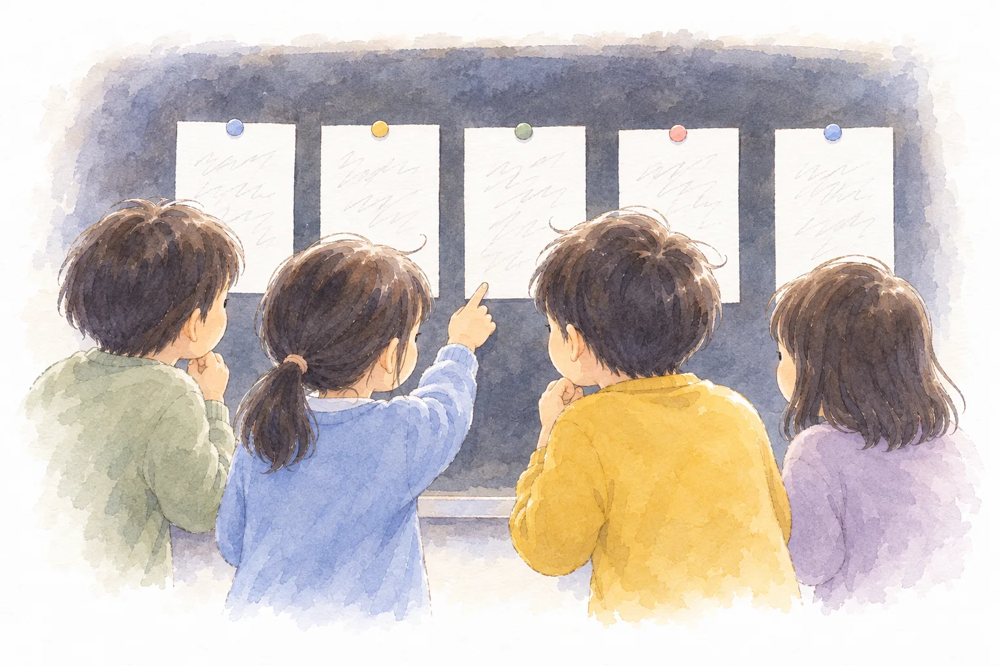

Board
板書計画
マス目プリントメーカーの板書計画で作りました。黒板の下の3つの欄は「発問と、予想される反応」です。編集用ファイルは、マス目プリントメーカーの「ひらく」で読みこむと、そのまま直せます。

第3時 第１次 空気③
Lesson 03
空気の体積と温度には、どんな関係があるのだろう

Lesson 3 / What we found about air
Aim
学習活動・実験結果を基に、空気の体積と温度の関係について妥当な考えをつくりだす。
目指す児童の姿根拠を基に「空気は、あたためると体積が大きくなり、冷やすと小さくなる」という妥当な結論を導き出し、表現している。
指導案の着眼１の表（第１次）より。第◯次の中での時間の割りふりは案です。
On screen
この時間の問い
空気の体積と温度には、どんな関係があるのだろう
問題は、子どもとつくってから映します。ふりがなは、この欄だけに付けています。
Flow
Experiment
この時間は実験をしません。前の時間の結果をもとに考えます。
Board
マス目プリントメーカーの板書計画で作りました。黒板の下の3つの欄は「発問と、予想される反応」です。編集用ファイルは、マス目プリントメーカーの「ひらく」で読みこむと、そのまま直せます。
Wrap up
うごく解説「あたためると？冷やすと？」。最後に結論の文が出るので、まとめのあとに見せる。何度でも同じ絵で見せられる。